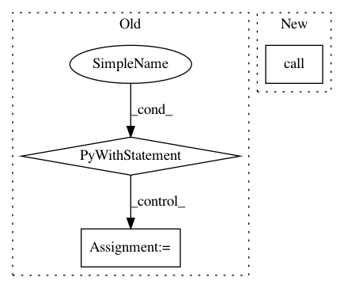

02601118f6edf725e64e2471def69e0114ae3845,src/python/pants/backend/android/tasks/aapt_builder.py,AaptBuilder,execute,#AaptBuilder#,64
Before Change
def execute(self):
safe_mkdir(self.workdir)
// TODO(mateor) map stderr and stdout to workunit streams (see CR 859)
with self.context.new_workunit(name="apk-bundle", labels=[WorkUnit.MULTITOOL]):
targets = self.context.targets(self.is_app)
with self.invalidated(targets) as invalidation_check:
invalid_targets = []
for vt in invalidation_check.invalid_vts:
invalid_targets.extend(vt.targets)
for target in invalid_targets:
// "input_dirs" is the folder containing the Android dex file
input_dirs = []
// "gen_out" holds resource folders (e.g. "res")
gen_out = []
mapping = self.context.products.get("dex")
for basedir in mapping.get(target):
input_dirs.append(basedir)
def gather_resources(target):
Gather the "resource_dir" of the target
if isinstance(target, AndroidResources):
gen_out.append(os.path.join(get_buildroot(), target.resource_dir))
target.walk(gather_resources)
process = subprocess.Popen(self.render_args(target, gen_out, input_dirs))
result = process.wait()
if result != 0:
raise TaskError("Android aapt tool exited non-zero ({code})".format(code=result))
for target in targets:
self.context.products.get("apk").add(target, self.workdir).append(target.app_name + "-unsigned.apk")
After Change
target.walk(gather_resources)
args = self.render_args(target, gen_out, input_dirs)
with self.context.new_workunit(name="apk-bundle", labels=[WorkUnit.MULTITOOL]) as workunit:
returncode = subprocess.call(args, stdout=workunit.output("stdout"),
stderr=workunit.output("stderr"))
if returncode:
raise TaskError("Android aapt tool exited non-zero: {0}".format(returncode))
for target in targets:
self.context.products.get("apk").add(target, self.workdir).append("{0}.unsigned.apk"
In pattern: SUPERPATTERN
Frequency: 3
Non-data size: 3
Instances
Project Name: pantsbuild/pants
Commit Name: 02601118f6edf725e64e2471def69e0114ae3845
Time: 2015-02-02
Author: mateorod9@gmail.com
File Name: src/python/pants/backend/android/tasks/aapt_builder.py
Class Name: AaptBuilder
Method Name: execute
Project Name: PetrochukM/PyTorch-NLP
Commit Name: eb61fee854576c8a57fd9a20ee03b6fcb89c493a
Time: 2019-05-16
Author: petrochukm@gmail.com
File Name: torchnlp/download.py
Class Name:
Method Name: _maybe_extract
Project Name: vatlab/SoS
Commit Name: fb921301eefc01d3daa922e80a0b6f84ecf0fe71
Time: 2017-06-14
Author: BPeng1@BCBW31517465254.mdanderson.edu
File Name: test/test_nested.py
Class Name: TestNested
Method Name: testSearchPath